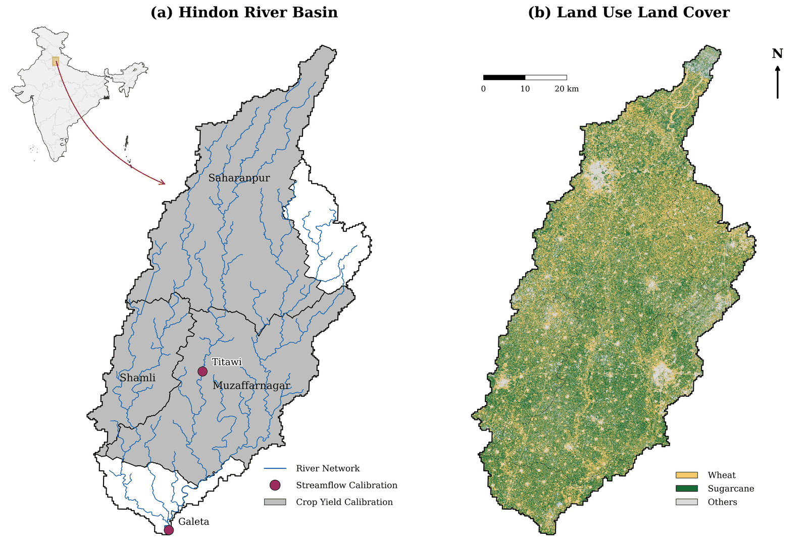

My work quantifies the fate of nitrogen applied to intensively irrigated cropland in the Indo-Gangetic Plain, and evaluates management practices that reduce nitrate accumulation in groundwater while maintaining crop production.
Theme 01
Nitrogen redistribution
Long-term budget across soil, crop, groundwater, and atmospheric compartments.
Theme 02
Coupled SW–GW modelling
SWAT+ coupled to gwflow, tracking leached nitrate through the aquifer.
Theme 03
Management practice evaluation
Tillage and nutrient scenarios assessed on leaching, carbon, emissions, and yield.
Theme 04
Water quality records
Compilation and quality control of long-term nitrate and stream chemistry data.
Nitrogen redistribution in an intensively irrigated basin
Decades of fertiliser application in the Indo-Gangetic Plain have moved large quantities of reactive nitrogen into soil organic matter, the unsaturated zone, the aquifer, and the atmosphere. Because transport through the subsurface is slow, the concentrations observed in groundwater today reflect management applied over preceding decades, and the response to any change in management is correspondingly delayed. My doctoral research constructs a long-term nitrogen budget across the soil, crop, groundwater, and atmospheric compartments of the Hindon River Basin in order to resolve where applied nitrogen accumulates and on what timescale it is released.

Coupled surface water and groundwater modelling
The basin is represented in a coupled SWAT+ and gwflow model covering 4,557 km² and discretised into 725 hydrological response units. The model simulates water, nitrogen, and carbon dynamics under the rice–wheat and sugarcane rotations that dominate the basin. Coupling the catchment model to a gridded groundwater flow component allows nitrate leached below the root zone to be tracked through the aquifer rather than treated as a terminal loss, which is a prerequisite for interpreting observed groundwater nitrate records.
Evaluation of best management practices
Management alternatives are assessed through a factorial set of scenarios combining tillage and nutrient management options. Each scenario is evaluated on multiple criteria — nitrate leaching, in-stream loads, soil organic carbon, greenhouse gas emissions, and crop yield — because practices that reduce one loss pathway frequently increase another. The purpose of the analysis is to identify practices for which nitrate mitigation is achieved without a yield penalty, and to state explicitly the trade-offs where such a penalty exists.
Water quality data compilation
Model evaluation draws on long-term groundwater nitrate and stream water quality records compiled from national monitoring archives. Preparing these records required handling of censored observations reported below detection limits, gap filling, and screening for inconsistent reporting units and sampling locations.
Earlier and parallel work
- Land use conversion from corn to switchgrass. A parallel modelling study on the water quality and bioenergy implications of converting corn cropland to switchgrass.
- Machine learning for groundwater level prediction. Master's-level work applying machine learning methods to groundwater level forecasting, published at CONIT 2023.
- Rural water distribution design. Design of rural water distribution networks for 70 villages under the Jal Jeevan Mission, Government of India.
Project affiliation
HIROS — Hindon Root Sensing: River Rejuvenation through Scalable Water and Solute Balance Modeling and Informed Farmers Action. An India–Netherlands collaborative project under the Clean Ganga Mission, with partners including Wageningen University & Research, TU Delft, and ICAR-CSSRI Karnal.